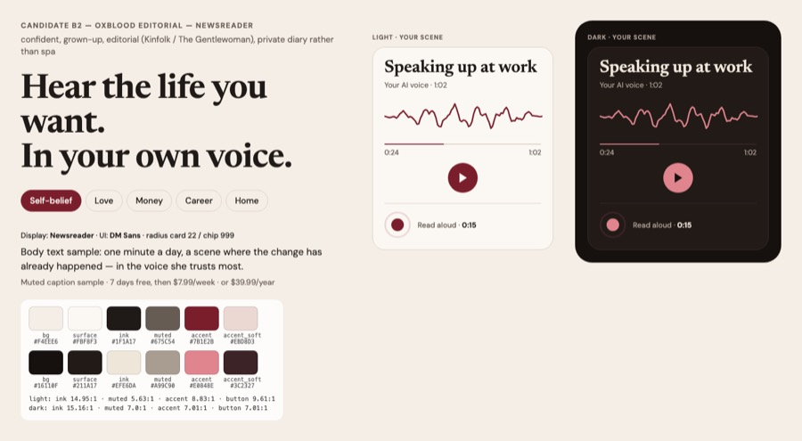
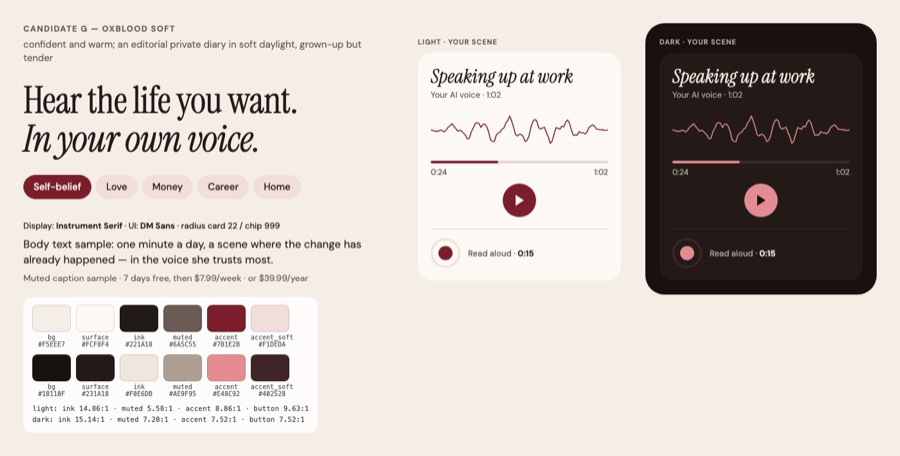
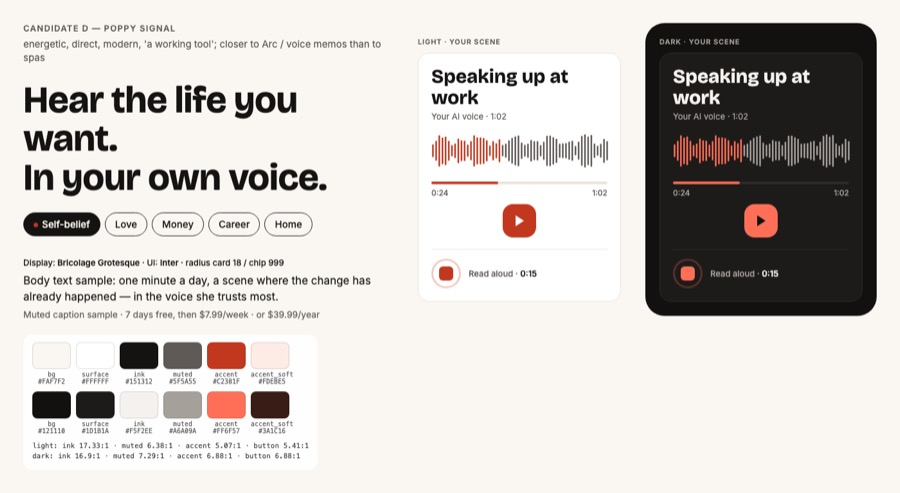
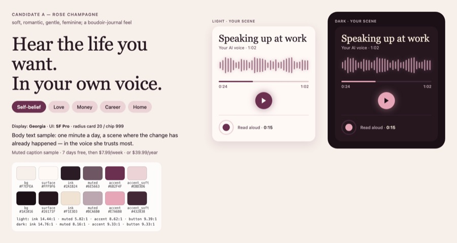

Herself 🎙️
Рабочий инструмент для женщин, которые хотят изменить что-то в жизни. Она выбирает, что хочет изменить, читает вслух 15 секунд — и слышит минутную сцену этой перемены своим голосом. Аффирмация — способ победить страх и сомнение и сдвинуться. $7.99/нед с 7-дневным триалом или $39.99/год.
Выбор основателя — скажите, какой вариант берём
Выбор 1 — первые три скриншота App Store
Интерфейс в телефоне — целевое состояние (приложение ещё заглушка). Фото — сгенерированы для макета; палитра и шрифты временные до выбора дизайн-системы. Нажмите на кадр, чтобы открыть крупно.
Набор EO — E в дизайн-системе «Oxblood Editorial» (победитель консилиума)склоняемся
- Hear the life you want. In your own voice.
- Your inner critic is loud. Let your voice answer.
- Overthinking tonight? Hear a kinder voice: yours.
Тексты = E (Jev «Get» 0,28). Оформление = система B2: 1-е место консилиума 7,20; бордо-поле сильнее всех выделяется среди конкурентов на 110 px.
Набор E — Основная страница: B1 → C1 → C3 (победитель Jev) + правки Codex

- Hear the life you want. In your own voice.
- Your inner critic is loud. Let your voice answer.
- Overthinking tonight? Hear a kinder voice: yours.
Jev: «Get» 0,28 — лучший во втором прогоне, 2 из 3 порядков; ровно по когортам (0,26–0,38), кроме любви (0,08). Переобещание 1,49.
Набор L — Отдельная страница «manifest love»: A2 → C1 → C3

- What would being chosen feel like?
- Your inner critic is loud. Let your voice answer.
- Overthinking tonight? Hear a kinder voice: yours.
Для любви: Jev — у набора C «Get» в любви 0,78; A2 вместо C2 снижает переобещание с 1,82 до 1,30 при почти том же «скачать» (2,27 против 2,37).
Набор D — Альтернатива Codex: B1 → B2 → C3

- Hear the life you want. In your own voice.
- Pick what you want to change.
- Overthinking tonight? Hear a kinder voice: yours.
Codex Astra: лучший порядок «что это → как работает → зачем». Jev близкий вариант (C1·B2·C3) — 0,22, переобещание ниже всех (1,17).
Набор A — Вопросы-крючки (Codex Astra)

- What if “not enough” is wrong?
- What would being chosen feel like?
- Still replaying that conversation at midnight?
Jev «Get» 0,27, переобещание ниже всех (1,20), лидер у любви и новой главы. Codex: 3-е место — вопросы не объясняют продукт.
Набор B — Результат + сферы (бриф v3)

- Hear the life you want. In your own voice.
- Pick what you want to change.
- Hear your own voice say you can.
Jev «Get» 0,29, понятность лучшая (3,59), лидер у денег, дома, работы, glow-up. Codex: 1-е место. B1 — лучший первый кадр.
Набор C — Боль + её голос (JTBD Jev)


{kind=link}
{kind=link}
{kind=link}
{kind=link}
{kind=link}
{kind=link}
{kind=link}
{kind=link}
{kind=link}
{kind=link}
{kind=link}
{kind=link}
{kind=link}
{kind=link}
- Your inner critic is loud. Let your own voice answer back.
- Hear what being loved and chosen feels like.
- Overthinking at 2 a.m.? Hear your own voice be kind to you.
Jev «Get» 0,34 — лучший набор в первом прогоне (3 из 4 порядков), лидер у «поверить в себя». Но C2 «loved and chosen» переобещает (1,82).
Выбор 2 — дизайн-система и типографика
B2 «Oxblood Editorial» — Newsreader + DM Sansсклоняемся
{kind=link}

Тёплая бумага #F4EEE6, чернила #1F1A17, бордо #7B1E2B; ночью rosewood #E0848E на #16110F. Пилюли, радиус 22, одна линия голоса.
Jev 7,20 (1-е); доверие 0,60, премиально 0,76; Codex Astra — его выбор.
G «Oxblood Soft» — розовые чипы, мягче
{kind=link}

Та же палитра, розовые чипы #F1DEDA, мягкие формы.
Jev 6,93 (2-е); сильнее «для меня» и «заплачу» (0,37/0,35), но доверие 0,27 и ближе к конкурентам.
D «Poppy Signal» — мак на белом, жирный гротеск
{kind=link}

Тёплый белый, чёрный, мак #C2381F, Bricolage Grotesque + Inter — «рабочий» вид.
Jev 6,32; нравится деньгам и работе («заплачу» 0,41/0,34), но «холодно» 0,53.
A «Rose Champagne» — нынешняя
{kind=link}

Пудра #EBD3D6, слива #6B2F4F, Georgia + SF Pro.
Jev 5,01 — последнее место; 63% — эзотерика/кринж, 72% — «как у всех» (между Aya и I am).
Кто она — 9 когорт по тому, что она хочет изменить
От большей к меньшей. Рамка ⭐ — готовы подписаться (размер × оплата, консилиум Jev). Доли — оценки.
Поверить в себя
“I want to believe in myself.” «Хочу перестать говорить себе гадости и почувствовать, что я достаточно хороша».Боится: “I'm not good enough, not pretty enough… at my core, unloveable.” Внутренний критик, самосаботаж, прокручивание мыслей. Тревога здесь — блок, а не желание.Ищет: affirmations positive affirmations i am affirmationsГлавные JTBD: J1 J4
Любовь: найти своего человека или вернуть тепло
“I want someone who chooses me.” «Хочу здоровых отношений после токсичных». «Хочу, чтобы он вернулся» (SP).Боится: «А вдруг у меня этого никогда не будет? Все вокруг женятся». Стыдно проговаривать интимное вслух при семье.Ищет: manifest love attract love love affirmationsГлавные JTBD: J2 J4
Деньги: больше дохода и спокойствие за счета
“I want to stop panicking every time a bill comes.” «Хочу зарабатывать больше и закрыть долги».Боится: «Я всегда буду без денег». «Я не умею с деньгами». Стыд за долги.Ищет: manifest money money affirmations wealth affirmationsГлавные JTBD: J4 J8
Работа: новая работа, рост, своё дело
“I want a job where I'm valued.” «Хочу повышение». «Хочу, чтобы мой бизнес взлетел».Боится: «Я застряла на одном месте». Синдром самозванца: «увидят, что я не тяну».Ищет: manifest job business affirmations success affirmationsГлавные JTBD: J1 J3 J4
Glow-up и мир со своим телом
“I want to feel good in my body.” «Хочу свой glow-up».Боится: «Ненавижу, что вижу в зеркале». Сравнение с чужими фото.Ищет: glow up glow up for women health affirmationsГлавные JTBD: J1 J7
Своё место и свобода: дом, переезд, путешествия, питомец
“My own place with a balcony… and a dog.” «Хочу жить у моря» или «хочу в путешествие».Боится: «Я вечно буду снимать с соседями». «Это не для таких, как я».Ищет: vision board manifest a house dream homeГлавные JTBD: J5
Свои люди: друзья и принадлежность
“I want real friends who get me.” «Хочу перестать чувствовать себя одной».Боится: «У всех есть свои люди, кроме меня».Ищет: manifest friends how to make friendsГлавные JTBD: J1 J4
Семья и дети (желанная беременность — осторожно)
“I want to be the mom I want to be.” «Хочу спокойный дом». «Хочу ребёнка» (TTC).Боится: «Я подвожу своих детей». TTC: «а вдруг никогда».Ищет: manifest pregnancy mom affirmations fertilityГлавные JTBD: J1 J4
Новая глава: после разрыва, развода, потери, переезда
“I want to see a future for myself again.” «Хочу снова понять, кто я без него».Боится: «Начинать с нуля в 40». «Я не вижу будущего».Ищет: healing affirmations breakup affirmations how to get over a breakupГлавные JTBD: J1 J2 J4
JTBD — какие задачи она решает (J1–J8, по образцу Refluxora)
★ приоритет — доля платящих женщин, для которых задача на ★4–5 (Jev, 891 вызов). 📱 — лучший заголовок скриншота под задачу.
J1 🗣 Заглушить внутреннего критика ★★★★★
“I want to stop tearing myself down and actually believe I can.”Когда: The voice in her head keeps saying she's not good enough, not pretty enough, not ready.Что даёт Herself: Сцена её смелого момента её голосом («I say my idea, and it lands»); кадр «I can't» → «your voice»; подача Bold. Вслух она читает нейтральный текст, а не аффирмации — снимает «say them in the mirror feels fake».Когорты: 🪞 Поверить в себя, 🌱 Новая глава, 💼 Работа, ✨ Glow-up и мир со своим телом, 🫶 Свои люди, 👶 Семья и дети (желанная беременность — осторожно)Не обещаем: Не обещаем, что критик замолчит, и не лечим тревогу или депрессию (not therapy). Людям с низкой самооценкой громкие «я прекрасна» могут навредить (Wood 2009) — сцены про действие, а не про «я идеальна».«It's a great way to tackle negative self talk … Because it is my own voice it is very powerful! I have struggled in the past with positive self talk especially out loud.» thinkup ★5
J4 🌙 Выключить прокручивание мыслей ночью ★★★★★
“I want to stop spiralling and fall asleep to something kind about me.”Когда: At night she lies awake replaying the day, overthinking conversations and worrying about what's next.Что даёт Herself: Плеер на экране блокировки: повтор, таймер сна, подача Calm, тёмная тема. Та же сцена её голосом вместо прокручивания дня.Когорты: 🌱 Новая глава, 🪞 Поверить в себя, 🫶 Свои люди, 👶 Семья и дети (желанная беременность — осторожно), 💞 Любовь, 💼 Работа, 💸 ДеньгиНе обещаем: Не обещаем лучший сон и снятие тревоги (App Review 1.4.1, health claims). Обещаем только функцию: свой голос на повторе с таймером.«Used regularly before bed to help with ADHD looping thoughts and insomnia.» innertune ★5
J2 💞 Почувствовать, что меня выбирают ★★★
“I want to feel what it's like to be loved and chosen — instead of just waiting and worrying.”Когда: She's single, hurt after a breakup, or feels far from her partner; she keeps wondering if love will happen for her.Что даёт Herself: Сцена любви из её ответов («Sunday morning, just us») — про чувство «меня выбирают», без имени SP по умолчанию. Интимное вслух не читает: запись — нейтральный текст. Подача Calm, повтор вечером.Когорты: 💞 Любовь, 🌱 Новая главаНе обещаем: Не обещаем партнёра и возвращение конкретного человека («он вернётся» — нельзя). Продаём чувство «меня можно любить». Имя SP — только если она сама его вписала.«Being in a healthy relationship after a toxic one has been taking such a toll on my mental health. I overthink so much throughout the day, whether I'm with him or without him.» i-am ★5
J5 🚪 Сдвинуться с места ★★★
“I want it to feel real enough that I finally take the first step.”Когда: She knows what she wants — a new job, her own business, her own place — but keeps putting it off and feels stuck.Что даёт Herself: Сцена первого шага + вопрос онбординга «что может помешать?» (мечта + препятствие, WOOP): в сцене она делает шаг вопреки препятствию. Новая сцена раз в неделю — следующий шаг.Когорты: 💼 Работа, 🏡 Своё место и свободаНе обещаем: Не «визуализируй — и придёт»: мечты без препятствия снижают энергию (Oettingen). Сцена — репетиция шага, а не прогноз.«I wanted to get unstuck, feel confident again, and start taking consistent actions. By creating my own very specific meditations it started changing how I thought, the actions I took» innertune ★5
J7 🪞 Мир со своим телом ★★★
“I want to feel good in my own skin, not hate what I see.”Когда: She compares herself with photos, dislikes what she sees in the mirror and wants her glow-up.Что даёт Herself: Сцена «дома в своём теле»: ощущения и взгляд на себя, без веса, цифр и «до/после».Когорты: ✨ Glow-up и мир со своим теломНе обещаем: Не обещаем похудение, внешность и здоровье. Никаких цифр веса, фото «до/после». Только 18+.«I used to have terrible affirmations about my self like I said that I was ugly or that I was stupid» i-am ★5
J6 🌱 Увидеть будущее после конца ★★
“I want to see a future for myself again and find my way back to me.”Когда: Something ended — a relationship, a marriage, a job, a life she knew — and she can't picture what comes next.Что даёт Herself: Мягкая сцена «через год»: своё место, свои привычки, «я снова смеюсь». Без «всё уже хорошо». Новая сцена раз в неделю — следующая страница.Когорты: 🌱 Новая главаНе обещаем: Не терапия. При горе и разводе — без «уже всё хорошо», мягкие сцены опоры; ссылка на помощь в кризисе.«I was completely shattered and had no real vision for my future anymore after he was gone.» mantra ★5
J8 💸 Перестать паниковать из-за денег ★★
“I want to stop dreading my bank app and feel calm and capable about money.”Когда: Every bill makes her anxious; she has debt or irregular income and feels 'bad with money'.Что даёт Herself: Сцена спокойствия и решений: «открываю банк без страха», «записываюсь к врачу, не проверяя баланс». Без сумм и выигрышей.Когорты: 💸 ДеньгиНе обещаем: Не обещаем доход, суммы, закрытие долгов. «Already yours / hear it happen» рядом с деньгами — нельзя (переобещание 2,0–2,2 в консилиуме v3).«a job loss, debt, working a part time menial job, and a fruitless job hunt for a more professional opportunity, so my confidence and self esteem has bottomed out.» thinkup ★5
J3 ⚡ Собраться перед важным моментом ★
“I want to walk in calm and sure of myself, not shaking.”Когда: Tomorrow there's an interview, an exam, a presentation, a first date or a hard talk, and her nerves are taking over.Что даёт Herself: Сцена «после» события: интервью, экзамен, свидание, трудный разговор (дата события в ответах). Подача Bold, минута прямо перед входом. Действие вопреки страху: «My voice shook. I asked anyway.»Когорты: 💼 РаботаНе обещаем: Не обещаем оффер, оценку или «да» на свидании. Показываем спокойствие и действие вопреки страху, а не результат.«I listen to my recordings between sales calls and have made some specifically for getting in the zone for my calls.» affirmations-recorder ★5
Таблица JTBD × Jev — что писать на скриншотах
| ID | Задача её словами | Приоритет | Доля платящих с ★4–5 | «Начать с этого» | Заголовок скриншота (победитель Jev) | Скачать 0–4 | Переобещание 0–4 | Когорты |
|---|---|---|---|---|---|---|---|---|
| J1 🗣 | Заглушить внутреннего критика “I want to stop tearing myself down and actually believe I can.” | ★★★★★ | 70% | 32% | Your inner critic is loud. Let your own voice answer back. | 2.09 | 0.81 | 🪞 Поверить в себя, 🌱 Новая глава, 💼 Работа, ✨ Glow-up и мир со своим телом, 🫶 Свои люди, 👶 Семья и дети (желанная беременность — осторожно) |
| J4 🌙 | Выключить прокручивание мыслей ночью “I want to stop spiralling and fall asleep to something kind about me.” | ★★★★★ | 67% | 11% | Overthinking at 2 a.m.? Hear your own voice be kind to you. | 2.30 | 1.44 | 🌱 Новая глава, 🪞 Поверить в себя, 🫶 Свои люди, 👶 Семья и дети (желанная беременность — осторожно), 💞 Любовь, 💼 Работа, 💸 Деньги |
| J2 💞 | Почувствовать, что меня выбирают “I want to feel what it's like to be loved and chosen — instead of just waiting and worrying.” | ★★★ | 15% | 16% | Hear what being loved and chosen feels like. In your own voice. | 2.86 | 1.55 | 💞 Любовь, 🌱 Новая глава |
| J5 🚪 | Сдвинуться с места “I want it to feel real enough that I finally take the first step.” | ★★★ | 17% | 12% | Know what you want but keep waiting? Hear yourself take the step. | 2.13 | 0.97 | 💼 Работа, 🏡 Своё место и свобода |
| J7 🪞 | Мир со своим телом “I want to feel good in my own skin, not hate what I see.” | ★★★ | 21% | 9% | Tired of picking yourself apart in the mirror? Hear your own voice be kind. | 2.73 | 0.70 | ✨ Glow-up и мир со своим телом |
| J6 🌱 | Увидеть будущее после конца “I want to see a future for myself again and find my way back to me.” | ★★ | 8% | 5% | After an ending, hear a future you can believe in — in your own voice. | 3.01 | 1.47 | 🌱 Новая глава |
| J8 💸 | Перестать паниковать из-за денег “I want to stop dreading my bank app and feel calm and capable about money.” | ★★ | 11% | 12% | Dread opening your bank app? Hear your own voice make calm money choices. | 2.30 | 1.25 | 💸 Деньги |
| J3 ⚡ | Собраться перед важным моментом “I want to walk in calm and sure of myself, not shaking.” | ★ | 4% | 4% | Before the interview, the date, the hard talk: one minute in your own voice. | 3.14 | 0.73 | 💼 Работа |
Формула победителей: её боль + её голос как ответ («критик громкий → твой голос отвечает»). Заголовки с исходом («Hear the love you want», «Fall asleep to your own voice») — переобещание ≥ 1,6, запрещены. Второе мнение — Codex (GPT-6 Astra) ниже.
Когорты × задачи
Насколько задача — её прямо сейчас (Jev g1: ★1 слабо → ★5 главное). J1 «критик» и J4 «ночь» сильны почти везде — это общий страх; остальные — задачи своей когорты.
| Когорта | J1 🗣 | J2 💞 | J3 ⚡ | J4 🌙 | J5 🚪 | J6 🌱 | J7 🪞 | J8 💸 |
|---|---|---|---|---|---|---|---|---|
| 🪞 Поверить в себя | ★★★★★ | ★★ | ★★ | ★★★★ | ★★ | ★ | ★★★ | ★★ |
| 💞 Любовь | ★★★ | ★★★★ | ★★ | ★★★★ | ★★ | ★★ | ★★ | ★★ |
| 💸 Деньги | ★★★ | ★★ | ★★ | ★★★★ | ★★★ | ★★ | ★★ | ★★★★★ |
| 💼 Работа | ★★★★ | ★★ | ★★★ | ★★★★ | ★★★★ | ★★ | ★★ | ★★ |
| ✨ Glow-up и мир со своим телом | ★★★★ | ★★ | ★★ | ★★★ | ★★ | ★ | ★★★★★ | ★★ |
| 🏡 Своё место и свобода | ★★★ | ★★ | ★★ | ★★★ | ★★★★ | ★★ | ★★ | ★★★ |
| 🫶 Свои люди | ★★★★ | ★★★ | ★★ | ★★★★ | ★★ | ★★ | ★★★ | ★★ |
| 👶 Семья и дети (желанная беременность — осторожно) | ★★★★ | ★★ | ★★ | ★★★★ | ★★ | ★★ | ★★ | ★★ |
| 🌱 Новая глава | ★★★★ | ★★★★ | ★★ | ★★★★ | ★★★ | ★★★★★ | ★★★ | ★★ |
Скриншоты App Store — слот → JTBD → что нарисовано
| # | JTBD | Заголовок | Что нарисовано в телефоне | Для кого |
|---|---|---|---|---|
| 1 | J1, J2, J5, J8 | Hear the life you want. In your own voice. | Chips Self-belief · Love · Money · Career · Home above the frame; big player 'Speaking up at work', 1:00, one warm waveform 'Your AI voice'. | Любовь, Деньги, Своё место и свобода, Glow-up и мир со своим телом, Новая глава |
| 2 | all | Read aloud for 15 seconds. | Recording screen: neutral text, 0:15 ring; links 'Your recording → your AI voice', 'Your answers → your personal scene'. | all |
| 3 | J1 | Hear your own voice say you can. | Player with the line 'My voice shook. I asked anyway.', caption 'Example scene'. | Поверить в себя, Работа, Glow-up и мир со своим телом, Свои люди, Семья и дети (желанная беременность — осторожно), Новая глава |
| 4 | J4 | Overthinking at 2 a.m.? Hear your own voice be kind to you. | Dark Lock Screen player 'Tonight', repeat on, sleep timer 30 min, waveform 'Your AI voice'. | Поверить в себя, Любовь, Деньги, Свои люди, Семья и дети (желанная беременность — осторожно), Новая глава |
| 5 | J2 | Hear what being loved and chosen feels like. In your own voice. | Player 'Sunday morning, just us', 1:00; caption 'He looks at me like choosing me was easy.' | Любовь, Новая глава |
| 6 | J5, J3, J6, J8 | A new scene every week — for whatever's next. | Scene list with dates: 'The first step', 'Before my interview', 'A year from now', 'Calm about money'. | Работа, Своё место и свобода, Деньги, Новая глава |
| 7 | J7 | Tired of picking yourself apart in the mirror? Hear your own voice be kind. | Scene card 'At home in my body'; caption 'I catch my reflection and I smile.' No weight, no numbers. | Glow-up и мир со своим телом, Поверить в себя |
| 8 | trust | 7 days free, then $7.99/week. Cancel anytime. | Timeline Today → cancel before day 7 → day 7 charged; yearly $39.99 without trial. | all |
Основная страница — первые три из брифа v3 (их чаще называют лучшими), «Overthinking at 2 a.m.…» четвёртым; в PPO — тройка «Your inner critic is loud…» → «Read aloud for 15 seconds.» → ночной кадр (+0,3 к «скачать», но переобещание выше). Полный бриф →
Второе мнение — Codex (GPT-6 Astra)
Независимая таблица JTBD: самоподдержка ★5 · представить перемену ★5 · «это действительно я» ★5 · решиться действовать ★5 · близость ★4 · вернуться к сцене ★4 · тело ★3 · новая глава ★3.
Расхождения с Jev: Astra ставит «решиться на шаг» на ★5 (у Jev ★3) и не выделяет ночь отдельной задачей; предлагает кадры 4–6 отдать под близость, действие и тело вместо «выбора сфер / новой сцены / Calm-Bold»; цену показывать рядом с первым кадром. Звёзды Astra — его оценка, у Jev — моделирование.
research/codex-astra-jtbd-2026-09-26/answer.md